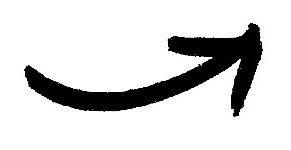

i moved to nyc to pursue my dream of acting. in between rehearsals and auditions, i started taking online programming classes and teaching myself how to code as a hobby.
slowly but surely, coding became the most fun i was having day to day, so i decided to join the flatiron school to become a full stack web developer.
in programming i’ve found all my favourite things: creativity, problem solving and a tool for social impact.
occassionally i get to sneak in some of my 8-bit art into my projects.
as a latina in tech, diversity is really important to me. buzzfeed is a brand that has always made me feel included, supported and celebrated, which media has not always made me feel.
i would love to work at a company where i can make that change for other people that have felt like me.
i think tech can be used as a tool for social change because it's the most effective way to reach people in their daily life. i want to work to create really high-impact products that make a difference be it make someone laugh or challenge someone's world view.
i love buzzfeed. it's how i choose to unwind after a long day of work. as a consumer, i'd love to work at a place whose product i already love, and make it better for other people who love it too!
 i taught myself intro to c, ruby, and html/css for fun. i also keep a blog about my coding discoveries.
i really love learning.
i just finished a very intensive web dev program including (but not limited to!) ruby on rails, sinatra, react/redux, sql and git.
i can pick up learn languages and frameworks fast.
i'm a team player, and also very self-motivated. i'm very excited about finally joining the tech community after watching from the sidelines.
i know my excitement and passion will make me a key team member!
i've worked on 3 full sized projects on 3 different frameworks:
too many cakes is an app very dear to my heart since it aims to reduce food waste by sharing leftovers with friends (ruby on rails and sql)
metro meets is a platform where MTA users can be matched with people with similar commutes so you can take the train together! (react/redux with rails backend)
boxit is a 2 player board game of a game i always play with my dad (javascript and jquery)